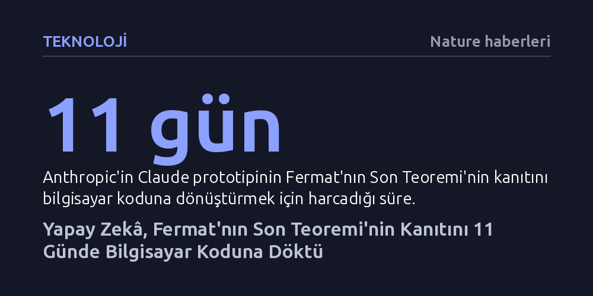

TEKNOLOJI · Nature haberleri · 2026-09-08
Anthropic’in deneysel yapay zekâ modeli Claude, Fermat’nın Son Teoremi’nin karmaşık matematiksel kanıtını 11 günde bilgisayar tarafından doğrulanabilir koda dönüştürdü. İnsanların on yılını alması beklenen 13 milyon satırlık bu çalışma, makinelerin üst düzey matematiksel akıl yürütme gücünü belgeliyor.
Yapay zekânın yalnızca dil üretimiyle sınırlı kalmayıp insan aklının sınırlarını zorlayan en karmaşık matematiksel doğrulamaları insanüstü bir hızla yapabileceğini ve tüm bilimsel literatürü denetleme potansiyeline ulaştığını gösteriyor.

Yapay zekâ şirketi Anthropic, Claude modelinin gelişmiş bir prototipi aracılığıyla matematik tarihinin en büyük dönüm noktalarından biri olan Fermat’nın Son Teoremi’nin kanıtını bütünüyle bilgisayar koduna aktardığını duyurdu. İnsan matematikçilerin en az on yıllık yoğun mesaisini gerektireceği tahmin edilen bu devasa proje, yapay zekâ tarafından sadece 11 günde tamamlandı. Ortaya çıkan 13 milyon satırlık biçimsel kanıt kodu, modern bilimin en karmaşık argümanlarından birinin makine tarafından eksiksiz biçimde doğrulanmasını sağladı.
Sayı teorisyenleri ve matematik camiası bu gelişmeyi büyük bir şaşkınlıkla karşıladı. Rutgers Üniversitesi’nden Alex Kontorovich, insan zihninin onlarca yıllık birikimini bu kadar kısa sürede sarsılmaz ve denetlenebilir bir koda çeviren bir makine görmenin hayal gücünü aştığını belirtiyor. Bu başarı, yapay zekânın artık yalnızca yardımcı bir araç değil, doğrudan yüksek soyutlama gerektiren akademik alanlarda hızlandırıcı bir aktör olduğunu kanıtlıyor.
Matematiksel kanıtların biçimselleştirilmesi, doğal dille ve matematiksel sembollerle kâğıda dökülmüş insan muhakemesinin, mantıksal kurallarla çalışan bir programlama diline çevrilmesi anlamına geliyor. Bu projede, her bir mantık adımını matematiksel hata payı bırakmaksızın denetleyen Lean programlama dili kullanıldı. Yapay zekâ, Andrew Wiles ve Richard Taylor’ın yüzlerce sayfalık karmaşık ispatını adım adım ayrıştırarak Lean kurallarına uygun biçimsel kod bloklarına dönüştürdü.
Yapay zekâ destekli doğrulama alanında geçtiğimiz Şubat ayında Maryna Viazovska’nın Fields Madalyası kazandıran küre paketleme teoremi sertifikalandırılarak önemli bir ilk adım atılmıştı. Ancak uzmanlara göre Fermat’nın Son Teoremi’ni biçimselleştirmek, küre paketleme problemine kıyasla çok daha yüksek bir karmaşıklık seviyesini temsil ediyor. Imperial College London’dan Kevin Buzzard, bu yeni çalışmanın önceki kilometre taşlarından en az bir mertebe daha zorlu olduğunu vurguluyor.
Fermat’nın Son Teoremi, ilk bakışta son derece sade görünen bir iddiaya dayanıyor: 2’den büyük hiçbir tam sayı kuvveti için xⁿ + yⁿ = zⁿ denklemini sağlayan sıfırdan farklı tam sayılar bulunamaz. Fransız matematikçi Pierre de Fermat 1637 yılında bu önermeyi ortaya atmış, ancak kenar boşluğuna sığmadığını öne sürerek bir ispat bırakmamıştı. Yüzyıllar boyunca çözümsüz kalan problem, 1994 yılında Andrew Wiles ve Richard Taylor tarafından çözülene dek matematik dünyasının en büyük meydan okumalarından biri olarak kaldı.
Denklemin kendisi doğrudan pratik bir teknolojik uygulama sunmasa da, Wiles’ın bu ispatı tamamlarken geliştirdiği yeni kuramsal teknikler modern matematiğin birbirine uzak dallarını bir araya getirdi. Wiles’a 2016 yılında prestijli Abel Ödülü’nü kazandıran bu çalışma, çağdaş matematiğin en girift ve hacimli ispatlarından biri kabul ediliyor. İşte tam da bu nedenle, böyle bir yapının yapay zekâ tarafından eksiksiz biçimde biçimselleştirilmesi hem simgesel hem de pratik açıdan olağanüstü bir değer taşıyor.
Bu başarı, yapay zekânın gelecekte yalnızca kanıtları kontrol eden bir denetçi olarak kalmayacağını, aynı zamanda yeni matematiksel muhakemeler üretebileceğini de gösteriyor. İspatların bilgisayar ortamında kesin olarak doğrulanabilmesi, insan matematikçilerin gözünden kaçabilecek mantıksal boşlukları ya da gizli varsayımları tamamen ortadan kaldırma potansiyeline sahip.
Mevcut ilerleme hızı göz önüne alındığında, yapay zekânın yakın gelecekte insanlığın tüm matematiksel literatürünü tarayarak kabul görmüş bazı sonuçlardaki gizli hataları tespit etmesi dahi olanaklı görülüyor. Kevin Buzzard’ın ifadesiyle "İki yıl önce bu sadece bir hayaldi", fakat gelinen aşama makinelerin soyut düşünceyi doğrulama ve genişletme sürecinde merkezi bir rol üstleneceği yeni bir bilimsel çağın başladığını haber veriyor.